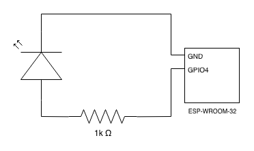
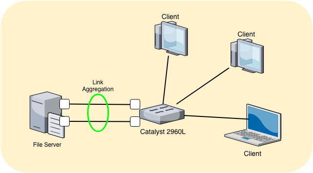

<!DOCTYPE html>
<html lang="ja">
<head>
  <meta charset="utf-8" />
  <meta http-equiv="X-UA-Compatible" content="IE=edge" />
  <meta name="HandheldFriendly" content="True" />
  <meta name="viewport" content="width=device-width, initial-scale=1.0" />
    <meta name="robots" content="index, follow" />

  <link href="https://fonts.googleapis.com/css?family=Source+Code+Pro|Source+Sans+Pro:300,400,400i,700" rel="stylesheet">

    <link rel="stylesheet" type="text/css" href="https://waura.github.io/theme/stylesheet/style.min.css">

  <link rel="stylesheet" type="text/css" href="https://waura.github.io/theme/pygments/monokai.min.css">
  <link rel="stylesheet" type="text/css" href="https://waura.github.io/theme/font-awesome/css/fontawesome.css">
  <link rel="stylesheet" type="text/css" href="https://waura.github.io/theme/font-awesome/css/brands.css">
  <link rel="stylesheet" type="text/css" href="https://waura.github.io/theme/font-awesome/css/solid.css">


    <link href="https://waura.github.io/feeds/all.atom.xml" type="application/atom+xml" rel="alternate" title="waura's blog Atom">


<!-- Google Analytics -->
<script type="text/javascript">
  (function(i,s,o,g,r,a,m){i['GoogleAnalyticsObject']=r;i[r]=i[r]||function(){
  (i[r].q=i[r].q||[]).push(arguments)},i[r].l=1*new Date();a=s.createElement(o),
  m=s.getElementsByTagName(o)[0];a.async=1;a.src=g;m.parentNode.insertBefore(a,m)
  })(window,document,'script','//www.google-analytics.com/analytics.js','ga');

  ga('create', 'UA-122706525-2', 'auto');
  ga('send', 'pageview');
</script>
<!-- End Google Analytics -->
    <!-- Chrome, Firefox OS and Opera -->
    <meta name="theme-color" content="#333333">
    <!-- Windows Phone -->
    <meta name="msapplication-navbutton-color" content="#333333">
    <!-- iOS Safari -->
    <meta name="apple-mobile-web-app-capable" content="yes">
    <meta name="apple-mobile-web-app-status-bar-style" content="black-translucent">
    <!-- Microsoft EDGE -->
    <meta name="msapplication-TileColor" content="#333333">

    <meta name="author" content="waura" />
    <meta name="description" content="waura's Thoughts and Writings" />
<meta property="og:site_name" content="waura's blog"/>
<meta property="og:type" content="blog"/>
<meta property="og:title" content="waura's blog"/>
<meta property="og:description" content="waura's Thoughts and Writings"/>
<meta property="og:locale" content="en_US"/>
<meta property="og:url" content="https://waura.github.io"/>
<meta property="og:image" content="//avatars3.githubusercontent.com/u/99647">

  <title>waura's blog &ndash;     Category JP
</title>

</head>
<body>
  <aside>
    <div>
      <a href="https://waura.github.io">
        
      </a>
      <h1><a href="https://waura.github.io"></a></h1>

<p>Software Engineer</p>

      <ul class="social">
          <li>
            <a  class="sc-linkedin" href="https://www.linkedin.com/in/hiroki-fujiwara-0/" target="_blank">
            <i class="fab fa-linkedin">
            </i>
          </a></li>
          <li>
            <a  class="sc-github" href="https://github.com/waura" target="_blank">
            <i class="fab fa-github">
            </i>
          </a></li>
          <li>
            <a  class="sc-twitter" href="https://twitter.com/waura8" target="_blank">
            <i class="fab fa-twitter">
            </i>
          </a></li>
          <li>
            <a  class="sc-rss" href="//blog.alexandrevicenzi.com/feeds/all.atom.xml" target="_blank">
            <i class="fas fa-rss">
            </i>
          </a></li>
      </ul>
    </div>


  </aside>
  <main>


<article>
  <header>
    <h2><a href="https://waura.github.io/esp32-devkitcdei2cjie-sok-gazheng-shikudekiteirukotowoque-ren-suru.html#esp32-devkitcdei2cjie-sok-gazheng-shikudekiteirukotowoque-ren-suru">ESP32-DevKitCでI2C接続が正しくできていることを確認する</a></h2>
    <p>
          Posted on Sun 31 March 2019 in <a href="https://waura.github.io/category/jp.html">JP</a>


          &#8226;     Tagged with

              <a href="https://waura.github.io/tag/esp32.html">ESP32</a>
    </p>
  </header>
  <div>
      <h1>はじめに</h1>
<p>I2C接続が必要なデバイスの場合、テスター等で確認することはできないので正しく接続できているか確認するのが面倒です。</p>
<p>ESP-IDFに便利なツール(<a href="https://github.com/espressif/esp-idf/tree/master/examples/peripherals/i2c/i2c_tools">i2c_tools</a>)があったので試してみます。このツールでは、サンプルプログラムをESP32-DevKitCに転送し、シリアルコンソール上でコマンドを実行することで、I2Cバスに接続されているデバイスの検知や、レジスタの読み書きが簡単にできます。</p>
<p>今回は、温度・湿度・気圧を測定できるセンサーのBME280をESP32-DevKitCにI2Cで接続し、i2c_toolsで動作を確認してみます。</p>
<h1>回路図</h1>
<p>i2c_toolsの<a href="https://github.com/espressif/esp-idf/tree/master/examples/peripherals/i2c/i2c_tools">README.md</a>によるとデフォルトのピンアサインは下記のようになっています。
ESP32 I2C MasterがESP32-DevKitC側で、Sensorが接続するデバイス側のピンです。</p>
<table>
<thead>
<tr>
<th></th>
<th>SDA</th>
<th>SCL</th>
<th>GND</th>
<th>Other</th>
<th>VCC</th>
</tr>
</thead>
<tbody>
<tr>
<td>ESP32 I2C Master</td>
<td>GPIO18</td>
<td>GPIO19</td>
<td>GND</td>
<td>GND</td>
<td>3.3V</td>
</tr>
<tr>
<td>Sensor</td>
<td>SDA</td>
<td>SCL</td>
<td>GND</td>
<td>WAK</td>
<td>VCC</td>
</tr>
</tbody>
</table>
<p>このピンアサインは、ツールをESP32-DevKitCに書き込み後、i2cconfigコマンドで変更することもできますが、今回はデフォルトのピンアサインで接続します。</p>
<p>下記のように接続しました …</p>
        <br>
        <a class="btn" href="https://waura.github.io/esp32-devkitcdei2cjie-sok-gazheng-shikudekiteirukotowoque-ren-suru.html#esp32-devkitcdei2cjie-sok-gazheng-shikudekiteirukotowoque-ren-suru">    Continue reading
</a>
  </div>
  <hr />
</article>
<article>
  <header>
    <h2><a href="https://waura.github.io/esp32deamazon-freertoswoshi-yong-shiteledwochikachikasasetemita.html#esp32deamazon-freertoswoshi-yong-shiteledwochikachikasasetemita">ESP32でAmazon FreeRTOSを使用してLEDをチカチカさせてみた</a></h2>
    <p>
          Posted on Tue 19 March 2019 in <a href="https://waura.github.io/category/jp.html">JP</a>


          &#8226;     Tagged with

              <a href="https://waura.github.io/tag/aws.html">AWS</a>
    </p>
  </header>
  <div>
      <h1>はじめに</h1>
<p>ESP32でAmazon FreeRTOSを使ってLEDチカチカさせる手順についてまとめます。</p>
<p>下記の公式ドキュメント等を参照してESP32にfirmwareの転送しMQTTのPublishができていることを前提としています。</p>
<p><a href="https://docs.aws.amazon.com/ja_jp/freertos/latest/userguide/getting_started_espressif.html">Espressif ESP32-DevKitC と ESP-WROVER-KIT の開始方法</a></p>
<p>デモのesp32_devkitc_esp_wrover_kitに手を加える形でLチカを実現します。</p>
<h1>ESP32でのGPIOの操作について</h1>
<p>ESP32向けの公式ライブラリとして<a href="https://docs.espressif.com/projects/esp-idf/en/latest/">ESP-IDF</a>が用意されています。
ESP-IDFはAmazon FreeRTOSに組み込まれているので、これを利用してGPIOを操作します。</p>
<p>ESP-IDFを使用したGPIOの操作に関しては、ESP-IDFのリファレンス(<a href="https://docs.espressif.com/projects/esp-idf/en/latest/api-reference/peripherals/gpio.html">API Reference - Peripherals API - GPIO &amp; RTC GPIO</a>)に説明があります。</p>
<p>また、サンプルコードもGitHub(<a href="https://github.com/espressif/esp-idf/tree/cf5dbadf4f25b395887238a7d4d8251c279afa8c/examples/peripherals/gpio">ESP-IDF GPIO Sample</a>)で公開されています。</p>
<h1>回路構成</h1>
<p>GPIO4を制御してLEDをチカチカさせることにします。
GPIO4とGNDの間にLEDと抵抗を入れてつなぎます。抵抗の大きさは適当です。</p>
<p><a href="../images/esp32/ESP32-LED.png"></a></p>
<h1>コードの修正</h1>
<p>esp32_devkitc_esp_wrover_kitのコードの修正を行います。
書き換え対象は、<a href="https://github.com/aws/amazon-freertos/blob/master/demos/espressif/esp32_devkitc_esp_wrover_kit/common/application_code/main.c">amazon-freertos/demos/espressif/esp32_devkitc_esp_wrover_kit/common/application_code/main.c</a> です。</p>
<p>元々のサンプルコードはDEMO_RUNNER_RunDemos …</p>
        <br>
        <a class="btn" href="https://waura.github.io/esp32deamazon-freertoswoshi-yong-shiteledwochikachikasasetemita.html#esp32deamazon-freertoswoshi-yong-shiteledwochikachikasasetemita">    Continue reading
</a>
  </div>
  <hr />
</article>
<article>
  <header>
    <h2><a href="https://waura.github.io/cisco-catalyst-2960l-woshi-yong-shitarinkuagurigeshiyonnoshe-ding.html#cisco-catalyst-2960l-woshi-yong-shitarinkuagurigeshiyonnoshe-ding">Cisco Catalyst 2960L を使用したリンクアグリゲーションの設定</a></h2>
    <p>
          Posted on Mon 14 January 2019 in <a href="https://waura.github.io/category/jp.html">JP</a>


          &#8226;     Tagged with

              <a href="https://waura.github.io/tag/sabaguan-li.html">サーバー管理</a>
    </p>
  </header>
  <div>
      <h1>ファイルサーバーとL2スィッチ間のリンクアグリゲーションを設定する</h1>
<p>自宅用に<a href="https://www.cisco.com/c/en/us/products/switches/catalyst-2960-l-series-switches/index.html">Cisco Catalyst 2960L</a>を手に入れました。
このL2スイッチではリンクアグリゲーションを設定することができるので、ファイルサーバーとスイッチ間でリンクアグリゲーションを設定します。</p>
<p>これにより、帯域を増やすことができ複数のクライアントが同時にアクセスしてもパフォーマンスの低下を防げることが期待できます。</p>
<h2>リンクアグリゲーションとは</h2>
<p>リンクアグリゲーション(IEEE 802.3ad)とは、複数の物理リンクをまとめて1本の論理リンクとして扱うことの技術です。
物理リンクの本数分の帯域を増やすことができる他、複数本の物理リンクが切断されてしまっても残りのリンクで通信を継続できるため、耐障害性も向上します。</p>
<p>CiscoではEtherCahnnelと呼ばれています。</p>
<h2>構成</h2>
<p><a href="./images/link_aggregatoin.png"></a></p>
<p>上記のようにファイルサーバーとスイッチ間を2本のLANケーブルで接続します。
ファイルサーバー側のLANポート2つと、スイッチ側のLANポート2つを、それぞれ接続します。</p>
<h1>設定</h1>
<h2>ファイルサーバー側</h2>
<p><a href="https://netplan.io/">Netplan</a>を使用して設定を行います。
enp0s31f6とenp8s0の2つのポートをまとめたbond0というdeviceを作成します。
modeは、IEEE802.3ad準拠で通信できるよう"802.3ad"を設定しています。</p>
<div class="highlight"><pre><span></span>$ sudo vi /etc/netplan/01-netcfg.yaml
</pre></div>


<div class="highlight"><pre><span></span># This file describes the …</pre></div>
        <br>
        <a class="btn" href="https://waura.github.io/cisco-catalyst-2960l-woshi-yong-shitarinkuagurigeshiyonnoshe-ding.html#cisco-catalyst-2960l-woshi-yong-shitarinkuagurigeshiyonnoshe-ding">    Continue reading
</a>
  </div>
  <hr />
</article>
<article>
  <header>
    <h2><a href="https://waura.github.io/zi-zhai-sanstorage-area-networknogou-zhu.html#zi-zhai-sanstorage-area-networknogou-zhu">自宅SAN(Storage Area Network)の構築</a></h2>
    <p>
          Posted on Sat 29 December 2018 in <a href="https://waura.github.io/category/jp.html">JP</a>


          &#8226;     Tagged with

              <a href="https://waura.github.io/tag/sabaguan-li.html">サーバー管理</a>
    </p>
  </header>
  <div>
      <h1>自宅SANの構築</h1>
<p>仮想サーバーを立ててライブマイグレーションをさせたい場合や、ディスクを一台のサーバーに集約させたい場合などに、SANを構築すると便利です。
ファイルベースのアクセスとなるNASとは違い、SANはブロックデバイスの形でネットワーク内に共有されます。
そのため、オーバーヘッドが小さいのに加えて、更にファイバーチャネルを使用して高速なネットワークを作成することもできます。</p>
<p>今回は、自宅にSANを構築したので、その手順をまとめます。</p>
<h1>構成</h1>
<p><a href="./images/HomeSAN.png"></a></p>
<p>ストレージを公開する側をターゲット、ストレージを使う側をイニシエータといいます。
ターゲットとイニシエータには、<a href="http://www.fibrechannelworks.com/QLE2560.asp">QLogicのQLE2560のHBA (Host Bus Adapter)</a>をPCIeで刺しています。
このボードは型が古いため運が良ければ一枚1,000円程度でヤフオクで取得できます。</p>
<p>それぞれのHBAはファイバーケーブルで接続します。ケーブルにはシンクルモードとマルチモードの違いがある他、コネクタ形状には、SCとLCという違いがあります。
HBAに刺さっているSFPトランシーバーが対応しているものを使用する必要があります。</p>
<p>私の場合は、LC - マルチモードのケーブルを使用しています。</p>
<p>ターゲットとイニシエータには、Ubuntu 17.10をインストールしてあります。</p>
<h1>ターゲット側のセットアップ</h1>
<h2>ターゲットモードを有効にする</h2>
<p>QLE2560のボードを接続すると、自動でqla2xxxドライバーが読み込まれるはずです。
qla2xxxはデフォルトでイニシィエータモードで動作するので、ターゲット側ではターゲットモードで動作するように設定を変更します。
qla2xxx向けの設定ファイルを新規で作成します。</p>
<div class="highlight"><pre><span></span>$ sudo …</pre></div>
        <br>
        <a class="btn" href="https://waura.github.io/zi-zhai-sanstorage-area-networknogou-zhu.html#zi-zhai-sanstorage-area-networknogou-zhu">    Continue reading
</a>
  </div>
  <hr />
</article>
<article>
  <header>
    <h2><a href="https://waura.github.io/centos7degu-ding-ipadoresunoshe-ding-woxing-u.html#centos7degu-ding-ipadoresunoshe-ding-woxing-u">CentOS7で固定IPアドレスの設定を行う</a></h2>
    <p>
          Posted on Sat 18 August 2018 in <a href="https://waura.github.io/category/jp.html">JP</a>


          &#8226;     Tagged with

              <a href="https://waura.github.io/tag/sabaguan-li.html">サーバー管理</a>
    </p>
  </header>
  <div>
      <h1>固定IPアドレス設定</h1>
<p>CentOS 7.5.1804 での固定IPアドレスを設定するコマンドです。</p>
<div class="highlight"><pre><span></span># nmcli connection modify eth0 ipv4.addresses [割り当てたいIPアドレス] ipv4.gateway [GatewayのIPアドレス] ipv4.dns [参照するDNSサーバのIPアドレス] ipv4.method manual connection.autoconnect yes
</pre></div>


<p>2番目と3番目のオプションは、それぞれ短縮可能です。</p>
<ul>
<li>connection -&gt; c</li>
<li>modify -&gt; m</li>
</ul>
<p>ipv4.methodにmanualを設定しているのは、DHCPではなく固定でIPアドレスを割り当てるためです。
connection.autoconnect yesで起動時にNICが立ち上がるように設定しています。</p>
<h3>実行例</h3>
<div class="highlight"><pre><span></span># nmcli connection modify eth0 ipv4.addresses 192.168.1 …</pre></div>
        <br>
        <a class="btn" href="https://waura.github.io/centos7degu-ding-ipadoresunoshe-ding-woxing-u.html#centos7degu-ding-ipadoresunoshe-ding-woxing-u">    Continue reading
</a>
  </div>
  <hr />
</article>
<article>
  <header>
    <h2><a href="https://waura.github.io/atom330_vs_athlon5350_benchmark.html#atom330_vs_athlon5350_benchmark">2008年と2015年に組んだ省電力サーバーのベンチマーク比較</a></h2>
    <p>
          Posted on Mon 25 May 2015 in <a href="https://waura.github.io/category/jp.html">JP</a>


          &#8226;     Tagged with

              <a href="https://waura.github.io/tag/sabaguan-li.html">サーバー管理</a>
    </p>
  </header>
  <div>
      <h2>はじめに</h2>
<p>サーバーを新しく組んだので、ベンチマークの比較をしてみます。<br>
比較対象サーバーの構成の比較は下記のとおりです。</p>
<table>
<thead>
<tr>
<th align="center"></th>
<th align="left">2008年</th>
<th align="left">2015年</th>
</tr>
</thead>
<tbody>
<tr>
<td align="center">CPU</td>
<td align="left">Intel Atom330</td>
<td align="left">AMD Athlon5350</td>
</tr>
<tr>
<td align="center">メモリ</td>
<td align="left">DDR2-800 2GB</td>
<td align="left">DDR3-1600 16GB</td>
</tr>
</tbody>
</table>
<p>ベンチマークソフトは<a href="https://code.google.com/p/byte-unixbench/">unixbench</a>を使用します。</p>
<h2>Atom330とAthlon5350のスペック比較</h2>
<table>
<thead>
<tr>
<th align="left"></th>
<th align="right">Atom330</th>
<th align="right">Athlon5350</th>
</tr>
</thead>
<tbody>
<tr>
<td align="left">周波数</td>
<td align="right">1.6GHz</td>
<td align="right">2.05GHz</td>
</tr>
<tr>
<td align="left">L1 cache</td>
<td align="right">64 KB (code) / 48 KB (data)</td>
<td align="right">128 KB (code) / 128 KB</td>
</tr>
<tr>
<td align="left">(data)</td>
<td align="right"></td>
<td align="right"></td>
</tr>
<tr>
<td align="left">L2 cache</td>
<td align="right">1024KB</td>
<td align="right">2048KB</td>
</tr>
<tr>
<td align="left">TDP</td>
<td align="right">8W</td>
<td align="right">25W</td>
</tr>
<tr>
<td align="left">実Core数</td>
<td align="right">2 …</td></tr></tbody></table>
        <br>
        <a class="btn" href="https://waura.github.io/atom330_vs_athlon5350_benchmark.html#atom330_vs_athlon5350_benchmark">    Continue reading
</a>
  </div>
  <hr />
</article>
<article>
  <header>
    <h2><a href="https://waura.github.io/echo_home_server_2015.html#echo_home_server_2015">だれでも組める！ 省電力かつ実用的な自宅サーバー 2015年版</a></h2>
    <p>
          Posted on Sat 25 April 2015 in <a href="https://waura.github.io/category/jp.html">JP</a>


          &#8226;     Tagged with

              <a href="https://waura.github.io/tag/sabaguan-li.html">サーバー管理</a>
    </p>
  </header>
  <div>
      <h2>なぜ自宅サーバーか？</h2>
<p>「自宅サーバーではなく、VPSを利用すれば安くサーバーを使えるのでは？」と思われる方も多いかと思います。<br>
たしかに、VPSをレンタルすれば安い費用でサーバーを利用でき、さらに「初期投資が不必要」「サーバーの電気代がかからない」というメリットがあります。<br>
しかし、自分はファイルサーバーにも使用したいのでファイルを手元に置いておける自宅サーバーを使用することにします。</p>
<h2>どんなサーバーを組むのか？</h2>
<p>どんなサーバーを組むのかによって、重視するポイントが変わってきます。<br>
自分は下のような用途でサーバーを使用します。</p>
<ul>
<li>Webサーバー</li>
<li>ビルドサーバー</li>
<li>ファイルサーバ</li>
</ul>
<p>ビルドサーバー用途からなるべくCPU性能がいい方がいいし、メモリーも多い方がいい。<br>
また、ファイルサーバにも使うのでディスク容量もたくさん欲しい。自宅にサーバーを置くので電気代はあまりかからない方がいい。<br>
...と、要は性能はなるべく高く、かつ電気代はなるべく安くとないものねだりになってしまいした。<br>
というわけで今回は、通常のデスクトップPCよりは低消費電力かつ、サーバーの用途に支障をきたさない程度のサーバーの構成を考えてみたいと思います。</p>
<h2>PCパーツの選択</h2>
<p>サーバーを建てるには、以下のパーツを用意する必要があります。</p>
<ul>
<li>CPU</li>
<li>マザーボード</li>
<li>メモリー</li>
<li>HDDまたはSSD</li>
<li>電源</li>
<li>PCケース</li>
</ul>
<p>自分は、電源とPCケースは持ってるもの使用するので、ここではCPU、メモリーとHDD(SSD)を選んで行きます。</p>
<h3>CPU</h3>
<p>今現在、デスクトップ向けで低消費電力かつそこそこの性能のCPUは、IntelのCelenron
J1900やPentium …</p>
        <br>
        <a class="btn" href="https://waura.github.io/echo_home_server_2015.html#echo_home_server_2015">    Continue reading
</a>
  </div>
</article>

  <div class="pagination">
  </div>


    <footer>
<p>&copy;  2007</p>
<p>    Powered by <a href="http://getpelican.com" target="_blank">Pelican</a> - <a href="https://github.com/alexandrevicenzi/flex" target="_blank">Flex</a> theme by <a href="http://alexandrevicenzi.com" target="_blank">Alexandre Vicenzi</a>
</p>    </footer>
  </main>


<script type="application/ld+json">
{
  "@context" : "http://schema.org",
  "@type" : "Blog",
  "name": " waura's blog ",
  "url" : "https://waura.github.io",
  "image": "//avatars3.githubusercontent.com/u/99647",
  "description": "waura's Thoughts and Writings"
}
</script>

</body>
</html>